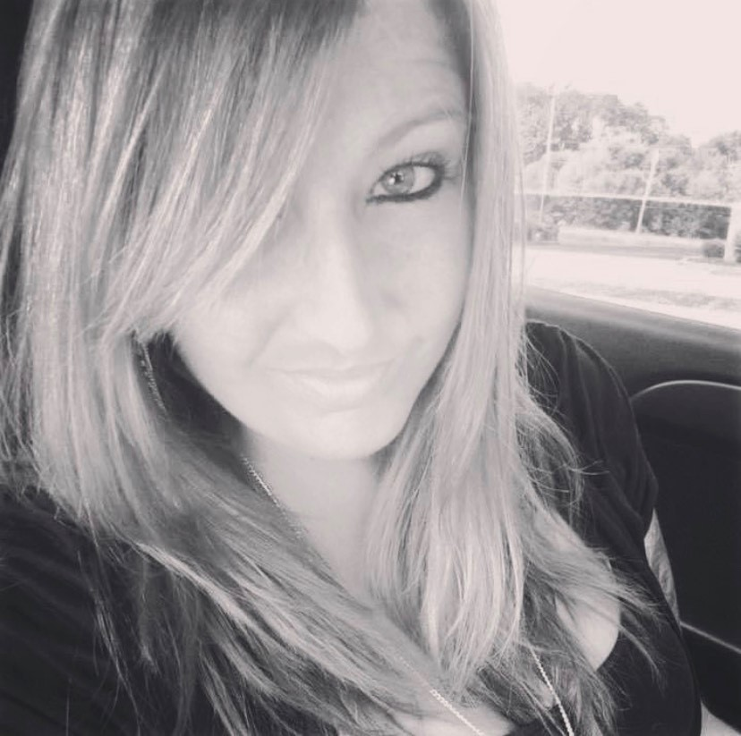

Lauren R. Kallas

About Me
I am 33 and currently reside in Olmsted Falls, Ohio. I do not have children, but I do have a dog. I am originally from Florida, so I do love warm weather and salty ocean air. I enjoy learning new things and reading. I currently am an Accounts Payable Administrator and although I love my job, I do not want my future to be in accounting. I recently graduated with short-term technical certificates for web-design and basic HTML coding. I have found that I am more fond of this career area than my current and would love to learn more. During my year of schooling, I made the Dean's List two out of three semesters. I also learned about databases, dipped into back-end coding, and learned C# in visual studio.